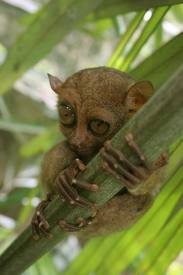
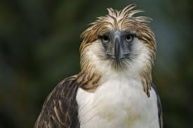
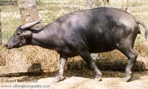

The purpose of this webpage is to inform YOU
about the current state of the environment.Problems,causes and solutions
are included in this webpage.Understand the messge of this webpage so that
you can do your part in saving our environment.
Problems
Greenhouse Effect
The greenhouse effect refers to the absorbing of heat by greenhouse
gases,similar to that of a greenhouse used to grow plants.
The greenhouse effect is the rise in temperature that the Earth experiences because
certain gases in the atmosphere (water vapor, carbon dioxide, nitrous oxide, and methane,
for example) trap energy from the sun. Without these gases, heat would escape back into space
and Earth’s average temperature would be about 60ºF colder. Because of
how they warm our world, these gases are referred to as greenhouse gases.
 |  |
| An illustration of the greenhouse effect.Note that some heat escapes. |
The heat caused by the greenhouse effect. |
Ozone Layer Depletion
A hole in the ozone layer was detected in Antarctica,speeding up the melting of glaciers there.
The distribution of ozone in the stratosphere is a function of altitude, latitude and season. It is determined by photochemical and transport processes. The
ozone layer is located between 10 and 50 km above the Earth's surface and contains 90% of all stratospheric ozone. Under normal conditions, stratospheric ozone
is formed by a photochemical reaction between oxygen molecules, oxygen atoms and solar radiation.The ozone layer is essential to life on earth, as it absorbs
harmful ultraviolet-B radiation from the sun. In recent years the thickness of this layer has been decreasing, leading in extreme cases to holes in the
layer.
Measurements carried out in the Antarctic have shown that at certain times, more than 95% of the ozone concentrations found at altitudes of between 15 and
20
km and more than 50% of total ozone are destroyed, with reductions being most pronounced during winter and in early spring. Natural phenomena, such as
sun-spots
and stratospheric winds, also decrease stratospheric ozone levels, but typically not by more than 1-2%.
The main cause of ozone layer depletion is the increased stratospheric concentration of chlorine from industrially produced CFCs , halons and selected
solvents.
Once in the stratosphere, every chlorine atom can destroy up to 100 000 ozone molecules. The amount of damage that an agent can do to the ozone layer is expressed
relative to that of CFC-11 and is called the Ozone Depletion Potential (ODP), where the ODP of CFC-11 is 1.The lifetime of some of these ozone depleting substances
is very long, and they may continue to deplete the ozone layer long after their use has been phased out. In this publication the ODP values for 100-year timespan
are used. Nevertheless some shorter-lived substances may have a very high chlorine loading potential and thus their effect in the short term is much larger than
reflected by their ODP value.Aircraft emissions of nitrogen oxides and water vapour add to this depletion effect by creating ice crystals that serve as a base for
ozone destroying reactions.The main potential consequences of this ozone depletion are:
* increase in UV-B radiation at ground level: a one percent loss of ozone leads to a two percent increase in UV radiation. Continuous exposure to UV
radiation affects humans, animals and plants, and can lead to skin problems (ageing, cancer), depression of the immune system, and corneal cataracts
(an eye disease that often leads to blindness). Increased UV radiation may also lead to a massive die-off of photoplancton (a CO 2 "sink") and
therefore to increased
global warming.
* disturbance of the thermal structure of the atmosphere, probably resulting in changes in atmospheric circulation;
* reduction of the ozone greenhouse effect: ozone is considered to be a greenhouse gas. A depleted ozone layer may partially dampen the greenhouse effect
. Therefore efforts to tackle ozone depletion may result in increased global warming.
* changes in the tropospheric ozone and in the oxidising capacity of the troposphere.
International targets for the reduction of ozone depleting substances have resulted in the almost complete phasing out of CFCs, halons and carbon tetrachloride in
the EU. Methyl chloroform and methyl bromide will be phased out by 2005 and HCFC by 2040.The policy fields Ozone Layer Depletion and Climate Change are different,
but closely related and indicators such as CFCs and NO x emissions appear in both chapters. However, only the potential effects on the ozone layer will be taken into
account under Ozone Layer Depletion whereas Climate Change will focus on the effects on global warming.
 |  |  |
| The ozone hole in Antarctica |
Another picture of the Antarctica Ozone Hole | Measurements over the ozone hole in Antarctica |
Native Philippine Animal Extinction or Endangerment
Many native animals are now being near threatened to extinction,such as the Tarsier,the Philippine Eagle,and the Mindoro Carabao
Tarsier:The Philippine Tarsier is an incredibly unique and interesting creature. These nocturnal animals are one of the worlds smallest primates (though not as
small as the pygmy marmoset) and are believed to be about 45 million years old as a species. The Philippine Tarsier is a shy nocturnal animal that leads a mostly
hidden life and are normally only active during the night to hunt for food (mainly insects). In the daytime they sleep in dark hollows or stumps close to the ground,
they prefer the cover of tall thick grass or bamboo thickets.
Philippine Eagle:
The Philippine Eagle (Pithecophaga jefferyi) is a giant forest raptor endemic to the Philippines. It is considered one of the largest and most powerful
eagles in the world. Unfortunately, it is also one of the world's rarest and certainly among its most critical endangered vertebrate species. The eagle is
known to be geographically restricted to the islands of Luzon, Samar, Leyte and Mindanao.
Carabao:
The carabao (Filipino: kalabaw; Malay: kerbau) or Bubalus bubalis carabanesis is a domesticated subspecies of the water buffalo (Bubalus bubalis) found in
the Philippines, Guam, Indonesia, Malaysia, and various parts of Southeast Asia. Carabaos are associated with farmers, being the farm animal of choice for
pulling both a plow and the cart used to haul produce to the market.
|  |  |  |
| A tarsier hugging a tree |
| Measurements over the ozone hole in Antarctica |